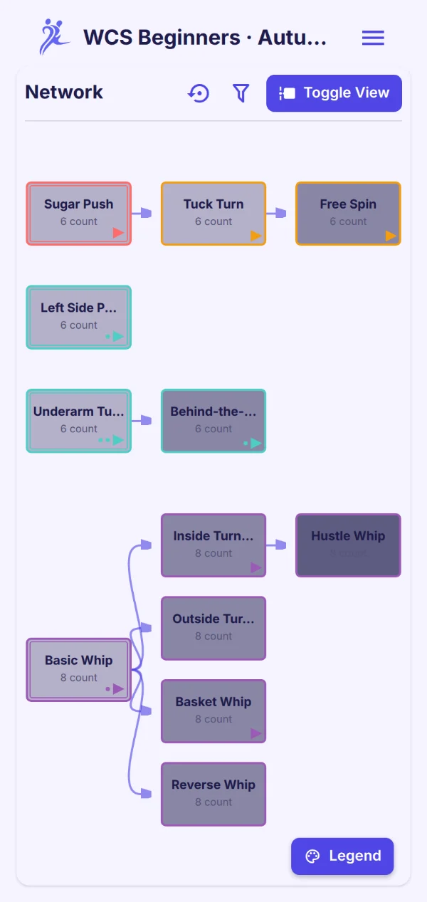
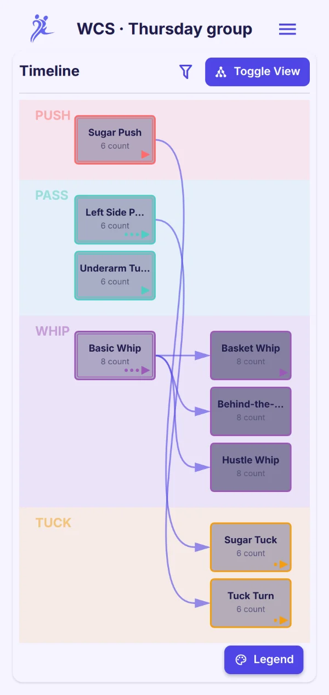
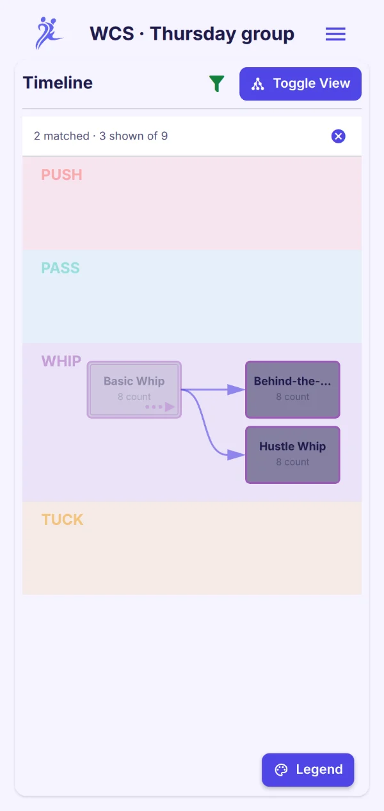
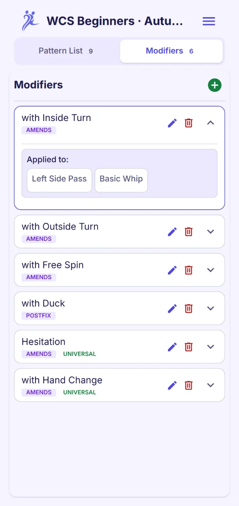

Keep what you learn in class.
DPM is a pattern library for partner dancers and the people who teach them. Collect the figures from your course with your own videos, see how they connect, and share the list with your classmates or your students.
In active development for Android and iOS. Open source, no account needed.

Made for the dance course
A course teaches a new figure every week, and by the last week the first ones have faded. DPM gives what you learn a place to stay.
For dancers
Film each figure while it's fresh, add the teacher's tips, and keep a reference you can come back to long after the course ends.
Share the list with your classmates and take turns recording the latest figure, so nobody has to film every week.
For dance teachers
Give every course its own list and add each figure as you teach it. Your students subscribe with a code, and their copy grows with the course.
Your course material, digital and always at hand, without building a website or handing out logins.
See how your figures connect
Some figures are foundations of the dance. In West Coast Swing, the sugar push, the left side pass, the underarm turn and the whip each stand on their own. Others grow out of them: a tuck turn builds on the sugar push, an inside turn whip on the basic whip. You record which figure builds on which, and DPM draws the map.
-
Start a list for your course
Pick a template for West Coast Swing, Salsa, Bachata, Argentine Tango or Lindy Hop, or start from a blank list for any other partner dance.
-
Add each figure as it comes
Name, type, counts, level, notes, your videos from class, tags such as the course week, and the figures it builds on.
-
See the whole map
DPM lays out your repertoire as a timeline or a network, and you can filter it down to exactly what you're working on.
Two views of one map
The timeline gives each pattern type its own lane and flows left to right by how many steps a pattern is from the basics. The network is a zoomable graph you can pan, pinch and arrange by hand.
- Colours show the pattern type, shading shows the level
- Badges show which patterns have videos or variations
- Drag nodes into your own arrangement. DPM remembers it for each list
- Tap any pattern to open its details and videos
- Circular prerequisites are flagged, never silently dropped

Find a pattern, and everything around it
Filter by name, type, level, counts or tags. On the graph, the filter doesn't just hide what doesn't match. It can keep the path that leads to a match, or everything connected to it, in view. The matches stay bright and the rest fades back.
Tag each figure with its course week, filter for week 3, and you see that week's new figures together with the ones they build on.
The same filter works on the list, alongside sorting by name, type, level, counts or date added.

Variations without duplicates
"With an inside turn", "hesitation", "slow": modifiers change how a pattern is danced without making it a new pattern. Each one comes before, after or inside the pattern it's attached to.
- Universal modifiers apply to every pattern in the list and can carry demo videos of their own
- Others attach to individual patterns and can carry their own demo videos per pattern: that pattern danced that way
- A modifier's page lists every pattern it's used with
DPM doesn't come with videos. Every clip is one you or your class recorded, or a link you added.

Your class videos, put to work
Attach videos to any pattern: a clip from your gallery, a new recording, or a YouTube link that starts at the right second. Then let DPM help with the tedious part:
- Shorten a long recording to just the pattern
- De-identify a clip by turning the dancers into silhouettes, so you can share it without sharing faces
- Transcribe what the teacher says, then tap a line to jump to it, or add the lines you want to your notes
- Suggest a name and description from that transcript. You decide whether to use it
All of it runs on the phone. The speech and language models download once, and your videos never leave the device. De-identifying, transcribing and suggestions are available on Android first.
And the details
One list per course
Each list has its own pattern types, colours and modifiers. The five dance templates come with starter patterns.
Levels, counts and tags
Beginner to advanced, the count of the pattern, and free-form tags to filter by.
Works offline
Everything is stored on your phone. Cloud sharing is optional and only happens when you publish.
Nine languages
English, 中文, हिन्दी, Español, Français, العربية, বাংলা, Português and Deutsch. DPM follows your phone's language by default.
Light and dark
Follow the system or pick one. Colour contrast meets accessibility minimums in both.
Questions
Which dances does it work for?
Any partner dance. There are templates for West Coast Swing, Salsa, Bachata, Argentine Tango and Lindy Hop, and a blank list lets you set up your own pattern types for anything else.
I teach a course. How do I set it up?
Create a list for the course, add each figure as you teach it, and tag it with the week if you like. Publish the list and show the code or QR code in class. Your students' copies follow every change you make, so next week's figure appears on their phones as soon as you add it.
How can my class share the filming?
Agree who records which week. Either one person keeps and publishes the list and links the clips once they're on a video site, or you pass the list round as an exported file with the videos inside, each of you adding the figure you filmed. De-identifying a clip first turns the dancers into silhouettes if not everyone wants to be seen.
Do I need an account?
No. DPM has no accounts and no sign-in. Your lists live on your phone. Sharing works with a code, not a profile.
Where do my videos go?
Nowhere, unless you send them. Videos stay on your device. An export can include them if you choose, and a published list only shares video links, never the files.
Does the AI send my videos to a server?
No. Silhouettes, transcripts and suggestions are computed on the phone. The models download once (Wi-Fi recommended), and you can delete them in Settings.
What happens to a list I've shared if I stop sharing?
The cloud copy is deleted right away. People who subscribed keep their copy, and it becomes theirs to edit.